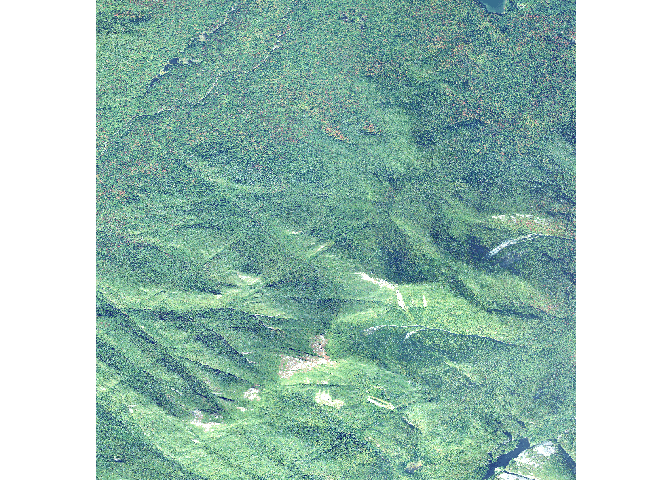
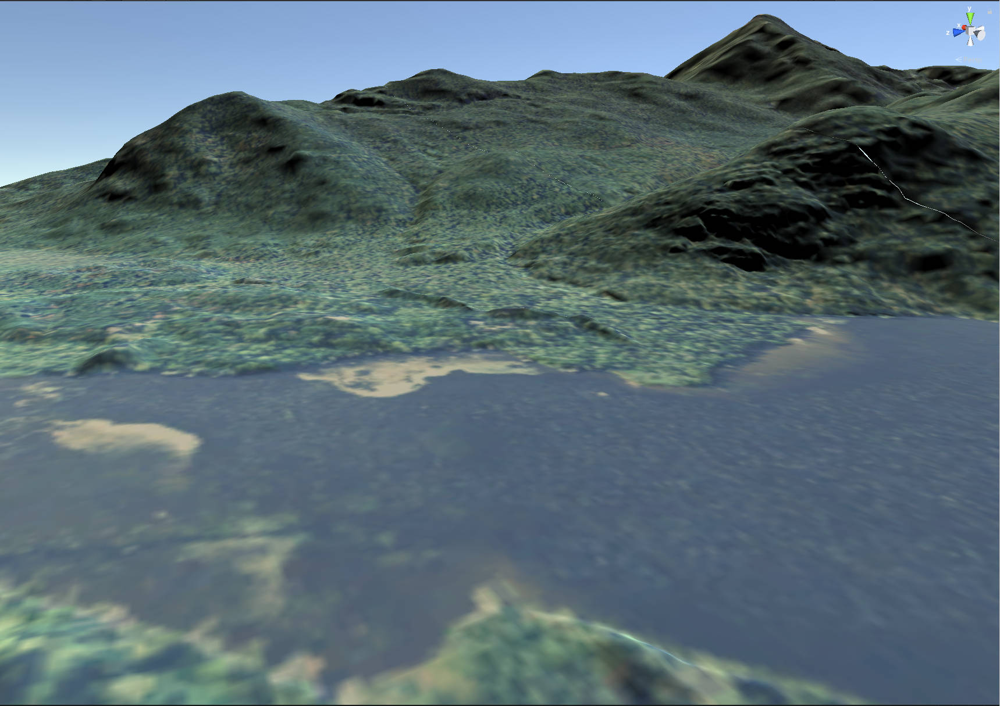

Overview
terrainr makes it easy to identify your area of interest from point data, retrieve data for that area from the National Map API, and then process that data into larger, joined images or crop it into tiles that can be imported into the Unity rendering engine.
At the absolute simplest level, terrainr provides a convenient and consistent API to downloading data from the National Map.
library(terrainr) simulated_data <- data.frame(id = seq(1, 100, 1), lat = runif(100, 44.04905, 44.17609), lng = runif(100, -74.01188, -73.83493)) bbox <- get_coord_bbox(lat = simulated_data$lat, lng = simulated_data$lng) output_tiles <- get_tiles(bbox = bbox, services = c("elevation", "ortho"))
# output_tiles is now a list of two vectors pointing to the elevation and # orthoimagery tiles we just downloaded -- here we're displaying the first # of the ortho tiles raster::plot(raster::raster(output_tiles[[2]][[1]]))

Once downloaded, these images are in standard GeoTIFF or PNG formats and can be used as expected with other utilities:

Additionally, terrainr provides functions to transform these tiles into RAW images ready to be imported into the Unity rendering engine, allowing you to fly or walk through your downloaded data sets in 3D or VR:
merged_dem <- tempfile(fileext = ".tif") merged_ortho <- tempfile(fileext = ".tif") # we can call these vectors by name instead of position, too merge_rasters(output_tiles$`3DEPElevation`, merged_dem, output_tiles$USGSNAIPPlus, merged_ortho) mapply(function(x, y) raster_to_raw_tiles(input_file = x, output_prefix = tempfile(), side_length = 4097, raw = y), c(merged_dem, merged_ortho), c(TRUE, FALSE)) # With about ten minutes of movie magic (loading the files into Unity), # we can turn that into:

terrainr also includes functionality to merge and crop the files you’ve downloaded, and to resize your area of interest so you’re sure to download exactly the area you want. Additionally, the more time intensive processing steps can all be monitored via the progressr package, so you’ll be more confident that your computer is still churning along and not just hung. For more information, check out the introductory vignette!
Installation
You can install the development version of terrainr from GitHub with:
# install.packages("devtools") devtools::install_github("mikemahoney218/terrainr")
If you’re planning on using raster_to_raw_tiles(), you’ll also need to install the development version of the magick package for the time being:
devtools::install_github("ropensci/magick")